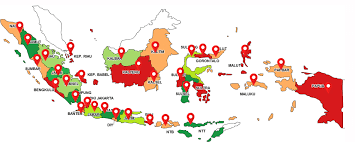
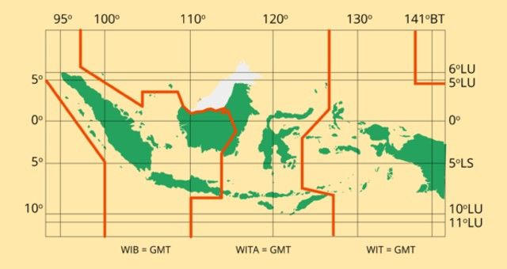

Nama saya Firman Suka Damai, mahasiswa Teknik Informatika dengan minat di web dan teknologi.
Negara Indonesia

Indonesia adalah negara kepulauan yang terletak di kawasan Asia Tenggara dan berada di antara dua benua, yaitu Asia dan Australia, serta di antara dua samudra besar, yaitu Samudra Hindia dan Samudra Pasifik.
Negara ini dikenal sebagai salah satu negara kepulauan terbesar di dunia dengan lebih dari 17.000 pulau yang tersebar dari Sabang hingga Merauke. Wilayahnya yang luas membuat Indonesia memiliki kondisi geografis yang sangat beragam.
Secara administratif, Indonesia terdiri dari puluhan provinsi yang memiliki karakteristik budaya, bahasa, dan adat istiadat yang berbeda-beda. Keberagaman ini menjadikan Indonesia sebagai negara dengan kekayaan budaya yang sangat tinggi.
Geografi
Strategis di antara dua benua dan dua samudra.

- Lintang: 6°LU – 11°LS
- Bujur: 95°BT – 141°BT
- Iklim: Tropis
- Garis pantai: 54.716 km (lebih dari 5.000 km)
Budaya
Kekayaan warisan yang tak ternilai.


Pancasila
1.Ketuhanan Yang Maha Esa
Klik untuk melihat penjelasan
2.Kemanusiaan yang Adil dan Beradab
Klik untuk melihat penjelasan
3.Persatuan Indonesia
Klik untuk melihat penjelasan
4.Kerakyatan yang Dipimpin oleh Hikmat Kebijaksanaan
Klik untuk melihat penjelasan
5.Keadilan Sosial bagi Seluruh Rakyat Indonesia
Klik untuk melihat penjelasan
Sejarah Singkat Indonesia
Majapahit
Kerajaan Majapahit pada abad ke-14 menjadi salah satu kerajaan terbesar di Nusantara.
1602
VOC Belanda mulai menguasai perdagangan dan wilayah Nusantara.
1945
Proklamasi Kemerdekaan Indonesia oleh Soekarno dan Hatta pada 17 Agustus.
1998
Reformasi Indonesia yang mengakhiri era Orde Baru.
Kontak
Kirim pesan kepada saya
×